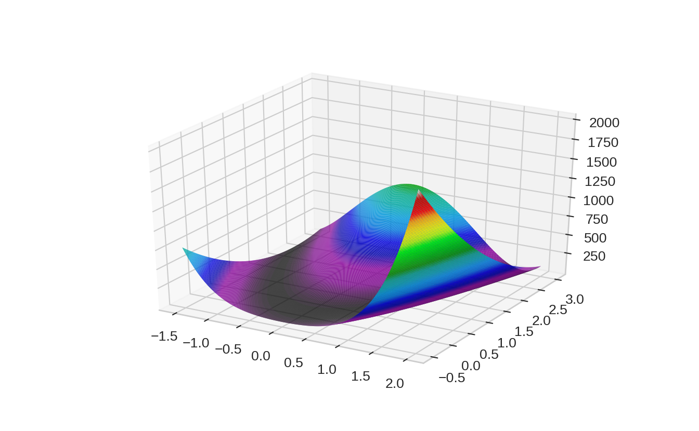

4 Benchmarks
Four discrete problems and four continous problems.
4.1 Discrete Optimization
4.1.2 Traveling Salesperson Problem
class TSPBenchmark():
def __init__(self, coordinates):
self.coordinates = coordinates
self.distances = self.__calculate_distance(self.coordinates)
self.n_cities = len(self.coordinates)
self.__n_bits = int(np.ceil(np.log2(self.n_cities)))
def evaluate_solution(self, solution):
distance = 0
for ii in range(self.n_cities-1):
distance += self.distances[solution[ii]][solution[ii+1]]
return(distance)
def transform_bit_solution(self, bit_solution):
#TODO optimize!
str_gene = bit_solution.reshape(self.n_cities, self.__n_bits).astype(str)
dec_gene = np.array([int(''.join(ii),2) for ii in str_gene])
tour_nested = [list((np.where(dec_gene == ii)[0])) for ii in set(sorted(dec_gene))]
flatten_tour = [ii for sub in tour_nested for ii in sub]
return(flatten_tour)
def evaluate_bit_solution(self, bit_solution):
return(self.evaluate_solution(self.transform_bit_solution(bit_solution)))
def __calculate_distance(self, coord):
distance = np.sum((coord[:, np.newaxis, :] - coord[np.newaxis, :, :]) ** 2, axis = -1)
return(distance)
@classmethod
def multimodal_normal(self, n_cities):
mixture = [
multivariate_normal([0, 0], [[2, 0], [0, 2]]),
multivariate_normal([-5, 5], [[1, -0.5], [-0.5, 1]]),
multivariate_normal([5, 5], [[1, 0.6], [0.6, 1]]),
multivariate_normal([-5, -5], [[1, -0.7], [-0.7, 4]]),
multivariate_normal([5, -5], [[2, -0.3], [-0.3, 2]])
]
coordinates_list = [ii.rvs(n_cities//len(mixture)) for ii in mixture]
coordinates_list.append(mixture[1].rvs(n_cities%len(mixture)))
return TSPBenchmark(np.concatenate(coordinates_list))
@classmethod
def uniform(self, n_cities):
coordinates = np.random.rand(n_cities,2)
return TSPBenchmark(coordinates)4.2 Continous Optimization
4.2.2 Rosenbrock Function
class RosenbrockFunction:
def __init__(self, a, b):
self.a = a
self.b = b
def evaluate_solution(self, x, y):
return((self.a -x)**2 + self.b*(y-x**2)**2)ros = RosenbrockFunction(1, 100)
x = np.linspace(-1.5, 2, 300)
y = np.linspace(-0.5, 3, 300)
x, y = np.meshgrid(x, y)
z = ros.evaluate_solution(x,y)fig = plt.figure()
ax = fig.gca(projection='3d')
ax.plot_surface(x, y, z, rstride=1, cstride=1,
cmap=cm.nipy_spectral, linewidth=0.08,
antialiased=True)
plt.show()